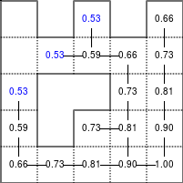
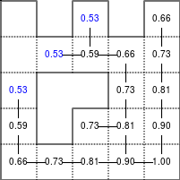
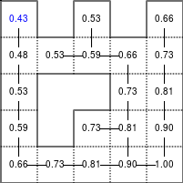
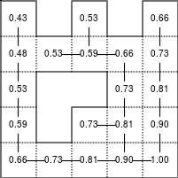
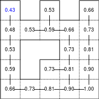
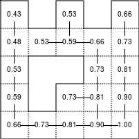

Problem vectorization#
Introduction#
Problem vectorization is much harder than code vectorization because it means that you fundamentally have to rethink your problem in order to make it vectorizable. Most of the time this means you have to use a different algorithm to solve your problem or even worse… to invent a new one. The difficulty is thus to think out-of-the-box.
To illustrate this, let’s consider a simple problem where given two vectors X and Y, we want to compute the sum of X[i]*Y[j] for all pairs of indices i, j. One simple and obvious solution is to write:
def compute_python(X, Y):
result = 0
for i in range(len(X)):
for j in range(len(Y)):
result += X[i] * Y[j]
return result
However, this first and naïve implementation requires two loops and we already know it will be slow:
>>> X = np.arange(1000)
>>> timeit("compute_python(X,X)")
1 loops, best of 3: 0.274481 sec per loop
How to vectorize the problem then? If you remember your linear algebra course, you may have identified the expression X[i] * Y[j] to be very similar to a matrix product expression. So maybe we could benefit from some NumPy speedup. One wrong solution would be to write:
def compute_numpy_wrong(X, Y):
return (X*Y).sum()
This is wrong because the X*Y expression will actually compute a new vector Z such that Z[i] = X[i] * Y[i] and this is not what we want. Instead, we can exploit NumPy broadcasting by first reshaping the two vectors and then multiply them:
def compute_numpy(X, Y):
Z = X.reshape(len(X),1) * Y.reshape(1,len(Y))
return Z.sum()
Here we have Z[i,j] == X[i,0]*Y[0,j] and if we take the sum over each elements of Z, we get the expected result. Let’s see how much speedup we gain in the process:
>>> X = np.arange(1000)
>>> timeit("compute_numpy(X,X)")
10 loops, best of 3: 0.00157926 sec per loop
This is better, we gained a factor of ~150. But we can do much better.
If you look again and more closely at the pure Python version, you can see that the inner loop is using X[i] that does not depend on the j index, meaning it can be removed from the inner loop. Code can be rewritten as:
def compute_numpy_better_1(X, Y):
result = 0
for i in range(len(X)):
Ysum = 0
for j in range(len(Y)):
Ysum += Y[j]
result += X[i]*Ysum
return result
But since the inner loop does not depend on the i index, we might as well compute it only once:
def compute_numpy_better_2(X, Y):
result = 0
Ysum = 0
for j in range(len(Y)):
Ysum += Y[j]
for i in range(len(X)):
result += X[i]*Ysum
return result
Not so bad, we have removed the inner loop, transforming \(O(n^2)\) complexity into \(O(n)\) complexity. Using the same approach, we can now write:
def compute_numpy_better_3(x, y):
Ysum = 0
for j in range(len(Y)):
Ysum += Y[j]
Xsum = 0
for i in range(len(X)):
Xsum += X[i]
return Xsum*Ysum
Finally, having realized we only need the product of the sum over X and Y respectively, we can benefit from the np.sum function and write:
def compute_numpy_better(x, y):
return np.sum(y) * np.sum(x)
It is shorter, clearer and much, much faster:
>>> X = np.arange(1000)
>>> timeit("compute_numpy_better(X,X)")
1000 loops, best of 3: 3.97208e-06 sec per loop
We have indeed reformulated our problem, taking advantage of the fact that \(\sum_{ij}{X_i}{Y_j} = \sum_{i}X_i \sum_{j}Y_j$\) and we’ve learned in the meantime that there are two kinds of vectorization: code vectorization and problem vectorization. The latter is the most difficult but the most important because this is where you can expect huge gains in speed. In this simple example, we gain a factor of 150 with code vectorization but we gained a factor of 70,000 with problem vectorization, just by writing our problem differently (even though you cannot expect such a huge speedup in all situations). However, code vectorization remains an important factor, and if we rewrite the last solution the Python way, the improvement is good but not as much as in the NumPy version:
def compute_python_better(x, y):
return sum(x)*sum(y)
This new Python version is much faster than the previous Python version, but still, it is 50 times slower than the NumPy version:
>>> X = np.arange(1000)
>>> timeit("compute_python_better(X,X)")
1000 loops, best of 3: 0.000155677 sec per loop
Path finding#
Path finding is all about finding the shortest path in a graph. This can be split in two distinct problems: to find a path between two nodes in a graph and to find the shortest path. We’ll illustrate this through path finding in a maze. The first task is thus to build a maze.
Figure 5.1
A hedge maze at Longleat stately home in England. Image by Prince Rurik, 2005.
{kind=link}

Building a maze#
There exist many maze generation algorithms but I tend to prefer the one I’ve been using for several years but whose origin is unknown to me. I’ve added the code in the cited wikipedia entry. Feel free to complete it if you know the original author. This algorithm works by creating n (density) islands of length p (complexity). An island is created by choosing a random starting point with odd coordinates, then a random direction is chosen. If the cell two steps in a given direction is free, then a wall is added at both one step and two steps in this direction. The process is iterated for n steps for this island. p islands are created. n and p are expressed as float to adapt them to the size of the maze. With a low complexity, islands are very small and the maze is easy to solve. With low density, the maze has more “big empty rooms”.
def build_maze(shape=(65, 65), complexity=0.75, density=0.50):
# Only odd shapes
shape = ((shape[0]//2)*2+1, (shape[1]//2)*2+1)
# Adjust complexity and density relatively to maze size
n_complexity = int(complexity*(shape[0]+shape[1]))
n_density = int(density*(shape[0]*shape[1]))
# Build actual maze
Z = np.zeros(shape, dtype=bool)
# Fill borders
Z[0, :] = Z[-1, :] = Z[:, 0] = Z[:, -1] = 1
# Islands starting point with a bias in favor of border
P = np.random.normal(0, 0.5, (n_density, 2))
P = 0.5 - np.maximum(-0.5, np.minimum(P, +0.5))
P = (P*[shape[1], shape[0]]).astype(int)
P = 2*(P//2)
# Create islands
for i in range(n_density):
# Test for early stop: if all starting point are busy, this means we
# won't be able to connect any island, so we stop.
T = Z[2:-2:2, 2:-2:2]
if T.sum() == T.size: break
x, y = P[i]
Z[y, x] = 1
for j in range(n_complexity):
neighbours = []
if x > 1: neighbours.append([(y, x-1), (y, x-2)])
if x < shape[1]-2: neighbours.append([(y, x+1), (y, x+2)])
if y > 1: neighbours.append([(y-1, x), (y-2, x)])
if y < shape[0]-2: neighbours.append([(y+1, x), (y+2, x)])
if len(neighbours):
choice = np.random.randint(len(neighbours))
next_1, next_2 = neighbours[choice]
if Z[next_2] == 0:
Z[next_1] = 1
Z[next_2] = 1
y, x = next_2
else:
break
return Z
Here is an animation showing the generation process.
Figure 5.2
Progressive maze building with complexity and density control.
Breadth-first#
The breadth-first (as well as depth-first) search algorithm addresses the problem of finding a path between two nodes by examining all possibilities starting from the root node and stopping as soon as a solution has been found (destination node has been reached). This algorithm runs in linear time with complexity in \(O(|V|+|E|)\) (where \(V\) is the number of vertices, and \(E\) is the number of edges). Writing such an algorithm is not especially difficult, provided you have the right data structure. In our case, the array representation of the maze is not the most well-suited and we need to transform it into an actual graph as proposed by Valentin Bryukhanov.
def build_graph(maze):
height, width = maze.shape
graph = {(i, j): [] for j in range(width)
for i in range(height) if not maze[i][j]}
for row, col in graph.keys():
if row < height - 1 and not maze[row + 1][col]:
graph[(row, col)].append(("S", (row + 1, col)))
graph[(row + 1, col)].append(("N", (row, col)))
if col < width - 1 and not maze[row][col + 1]:
graph[(row, col)].append(("E", (row, col + 1)))
graph[(row, col + 1)].append(("W", (row, col)))
return graph
Note
If we had used the depth-first algorithm, there is no guarantee to find the shortest path, only to find a path (if it exists).
Once this is done, writing the breadth-first algorithm is straightforward. We start from the starting node and we visit nodes at the current depth only (breadth-first, remember?) and we iterate the process until reaching the final node, if possible. The question is then: do we get the shortest path exploring the graph this way? In this specific case, “yes”, because we don’t have an edge-weighted graph, i.e. all the edges have the same weight (or cost).
def breadth_first(maze, start, goal):
queue = deque([([start], start)])
visited = set()
graph = build_graph(maze)
while queue:
path, current = queue.popleft()
if current == goal:
return np.array(path)
if current in visited:
continue
visited.add(current)
for direction, neighbour in graph[current]:
p = list(path)
p.append(neighbour)
queue.append((p, neighbour))
return None
Bellman-Ford method#
The Bellman–Ford algorithm is an algorithm that is able to find the optimal path in a graph using a diffusion process. The optimal path is found by ascending the resulting gradient. This algorithm runs in quadratic time \(O(|V||E|)\) (where \(V\) is the number of vertices, and \(E\) is the number of edges). However, in our simple case, we won’t hit the worst case scenario. The algorithm is illustrated below (reading from left to right, top to bottom). Once this is done, we can ascend the gradient from the starting node. You can check on the figure that this leads to the shortest path.
Figure 5.3
Value iteration algorithm on a simple maze. Once entrance has been reached, it is easy to find the shortest path by ascending the value gradient.


 

{kind=link}
 



{kind=link}
{kind=link}
We start by setting the exit node to the value 1, while every other node is set to 0, except the walls. Then we iterate a process such that each cell’s new value is computed as the maximum value between the current cell value and the discounted (gamma=0.9 in the case below) 4 neighbour values. The process starts as soon as the starting node value becomes strictly positive.
The NumPy implementation is straightforward if we take advantage of the generic_filter (from scipy.ndimage) for the diffusion process:
def diffuse(Z):
# North, West, Center, East, South
return max(gamma*Z[0], gamma*Z[1], Z[2], gamma*Z[3], gamma*Z[4])
# Build gradient array
G = np.zeros(Z.shape)
# Initialize gradient at the entrance with value 1
G[start] = 1
# Discount factor
gamma = 0.99
# We iterate until value at exit is > 0. This requires the maze
# to have a solution or it will be stuck in the loop.
while G[goal] == 0.0:
G = Z * generic_filter(G, diffuse, footprint=[[0, 1, 0],
[1, 1, 1],
[0, 1, 0]])
But in this specific case, it is rather slow. We’d better cook-up our own solution, reusing part of the game of life code:
# Build gradient array
G = np.zeros(Z.shape)
# Initialize gradient at the entrance with value 1
G[start] = 1
# Discount factor
gamma = 0.99
# We iterate until value at exit is > 0. This requires the maze
# to have a solution or it will be stuck in the loop.
G_gamma = np.empty_like(G)
while G[goal] == 0.0:
np.multiply(G, gamma, out=G_gamma)
N = G_gamma[0:-2,1:-1]
W = G_gamma[1:-1,0:-2]
C = G[1:-1,1:-1]
E = G_gamma[1:-1,2:]
S = G_gamma[2:,1:-1]
G[1:-1,1:-1] = Z[1:-1,1:-1]*np.maximum(N,np.maximum(W,
np.maximum(C,np.maximum(E,S))))
Once this is done, we can ascend the gradient to find the shortest path as illustrated on the figure below:
Figure 5.4
Path finding using the Bellman-Ford algorithm. Gradient colors indicate propagated values from the end-point of the maze (bottom-right). Path is found by ascending gradient from the goal.

Sources#
References#
Labyrinth Algorithms, Valentin Bryukhanov, 2014.
Fluid Dynamics#
Figure 5.5
Hydrodynamic flow at two different zoom levels, Neckar river, Heidelberg, Germany. Image by Steven Mathey, 2012.
{kind=link}

Lagrangian vs Eulerian method#
Note
Excerpt from the Wikipedia entry on the Lagrangian and Eulerian specification
In classical field theory, the Lagrangian specification of the field is a way of looking at fluid motion where the observer follows an individual fluid parcel as it moves through space and time. Plotting the position of an individual parcel through time gives the pathline of the parcel. This can be visualized as sitting in a boat and drifting down a river.
The Eulerian specification of the flow field is a way of looking at fluid motion that focuses on specific locations in the space through which the fluid flows as time passes. This can be visualized by sitting on the bank of a river and watching the water pass the fixed location.
In other words, in the Eulerian case, you divide a portion of space into cells and each cell contains a velocity vector and other information, such as density and temperature. In the Lagrangian case, we need particle-based physics with dynamic interactions and generally we need a high number of particles. Both methods have advantages and disadvantages and the choice between the two methods depends on the nature of your problem. Of course, you can also mix the two methods into a hybrid method.
However, the biggest problem for particle-based simulation is that particle interaction requires finding neighbouring particles and this has a cost as we’ve seen in the boids case. If we target Python and NumPy only, it is probably better to choose the Eulerian method since vectorization will be almost trivial compared to the Lagrangian method.
NumPy implementation#
I won’t explain all the theory behind computational fluid dynamics because first, I cannot (I’m not an expert at all in this domain) and there are many resources online that explain this nicely (have a look at references below, especially tutorial by L. Barba). Why choose a computational fluid as an example then? Because results are (almost) always beautiful and fascinating. I couldn’t resist (look at the movie below).
We’ll further simplify the problem by implementing a method from computer graphics where the goal is not correctness but convincing behavior. Jos Stam wrote a very nice article for SIGGRAPH 1999 describing a technique to have stable fluids over time (i.e. whose solution in the long term does not diverge). Alberto Santini wrote a Python replication a long time ago (using numarray!) such that I only had to adapt it to modern NumPy and accelerate it a bit using modern NumPy tricks.
I won’t comment the code since it would be too long, but you can read the original paper as well as the explanation by Philip Rideout on his blog. Below are some movies I’ve made using this technique.
Figure 5.6
Smoke simulation using the stable fluids algorithm by Jos Stam. Right most video comes from the glumpy package and is using the GPU (framebuffer operations, i.e. no OpenCL nor CUDA) for faster computations.
Sources#
References#
12 Steps to Navier-Stokes, Lorena Barba, 2013.
Stable Fluids, Jos Stam, 1999.
Simple Fluid Simulation, Philip Rideout, 2010
Fast Fluid Dynamics Simulation on the GPU, Mark Harris, 2004.
Animating Sand as a Fluid, Yongning Zhu & Robert Bridson, 2005.
Blue noise sampling#
Blue noise refers to sample sets that have random and yet uniform distributions with absence of any spectral bias. Such noise is very useful in a variety of graphics applications like rendering, dithering, stippling, etc. Many different methods have been proposed to achieve such noise, but the most simple is certainly the DART method.
Figure 5.7
Detail of “The Starry Night”, Vincent van Gogh, 1889. The detail has been resampled using voronoi cells whose centers are a blue noise sample.

DART method#
The DART method is one of the earliest and simplest methods. It works by sequentially drawing uniform random points and only accepting those that lie at a minimum distance from every previous accepted sample. This sequential method is therefore extremely slow because each new candidate needs to be tested against previous accepted candidates. The more points you accept, the slower the method is. Let’s consider the unit surface and a minimum radius r to be enforced between each point.
Knowing that the densest packing of circles in the plane is the hexagonal lattice of the bee’s honeycomb, we know this density is \(d = \frac{1}{6}\pi\sqrt{3}\) (in fact I learned it while writing this book). Considering circles with radius \(r\), we can pack at most \(\frac{d}{\pi r^2} = \frac{\sqrt{3}}{6r^2} = \frac{1}{2r^2\sqrt{3}}\). We know the theoretical upper limit for the number of discs we can pack onto the surface, but we’ll likely not reach this upper limit because of random placements. Furthermore, because a lot of points will be rejected after a few have been accepted, we need to set a limit on the number of successive failed trials before we stop the whole process.
import math
import random
def DART_sampling(width=1.0, height=1.0, r = 0.025, k=100):
def distance(p0, p1):
dx, dy = p0[0]-p1[0], p0[1]-p1[1]
return math.hypot(dx, dy)
points = []
i = 0
last_success = 0
while True:
x = random.uniform(0, width)
y = random.uniform(0, height)
accept = True
for p in points:
if distance(p, (x, y)) < r:
accept = False
break
if accept is True:
points.append((x, y))
if i-last_success > k:
break
last_success = i
i += 1
return points
I left as an exercise the vectorization of the DART method. The idea is to pre-compute enough uniform random samples as well as paired distances and to test for their sequential inclusion.
Bridson method#
If the vectorization of the previous method poses no real difficulty, the speed improvement is not so good and the quality remains low and dependent on the k parameter. The higher, the better since it basically governs how hard to try to insert a new sample. But, when there is already a large number of accepted samples, only chance allows us to find a position to insert a new sample. We could increase the k value but this would make the method even slower without any guarantee in quality. It’s time to think out-of-the-box and luckily enough, Robert Bridson did that for us and proposed a simple yet efficient method:
Step 0. Initialize an n-dimensional background grid for storing samples and accelerating spatial searches. We pick the cell size to be bounded by \(\frac{r}{\sqrt{n}}\), so that each grid cell will contain at most one sample, and thus the grid can be implemented as a simple n-dimensional array of integers: the default −1 indicates no sample, a non-negative integer gives the index of the sample located in a cell.
Step 1. Select the initial sample, \(x_0\), randomly chosen uniformly from the domain. Insert it into the background grid, and initialize the “active list” (an array of sample indices) with this index (zero).
Step 2. While the active list is not empty, choose a random index from it (say \(i\)). Generate up to \(k\) points chosen uniformly from the spherical annulus between radius \(r\) and \(2r\) around \(x_i\). For each point in turn, check if it is within distance \(r\) of existing samples (using the background grid to only test nearby samples). If a point is adequately far from existing samples, emit it as the next sample and add it to the active list. If after \(k\) attempts no such point is found, instead remove \(i\) from the active list.
Implementation poses no real problem and is left as an exercise for the reader. Note that not only is this method fast, but it also offers a better quality (more samples) than the DART method even with a high \(k\) parameter.
Figure 5.8
Comparison of uniform, grid-jittered and Bridson sampling.
{kind=link}
Sources#
DART_sampling_numpy.py (solution to the exercise)
Bridson_sampling.py (solution to the exercise)
References#
Visualizing Algorithms Mike Bostock, 2014.
Stippling and Blue Noise Jose Esteve, 2012.
Poisson Disk Sampling Herman Tulleken, 2009.
Fast Poisson Disk Sampling in Arbitrary Dimensions, Robert Bridson, SIGGRAPH, 2007.
Conclusion#
The last example we’ve been studying is indeed a nice example where it is more important to vectorize the problem rather than to vectorize the code (and too early). In this specific case we were lucky enough to have the work done for us but it won’t be always the case and in such a case, the temptation might be high to vectorize the first solution we’ve found. I hope you’re now convinced it might be a good idea in general to look for alternative solutions once you’ve found one. You’ll (almost) always improve speed by vectorizing your code, but in the process, you may miss huge improvements.